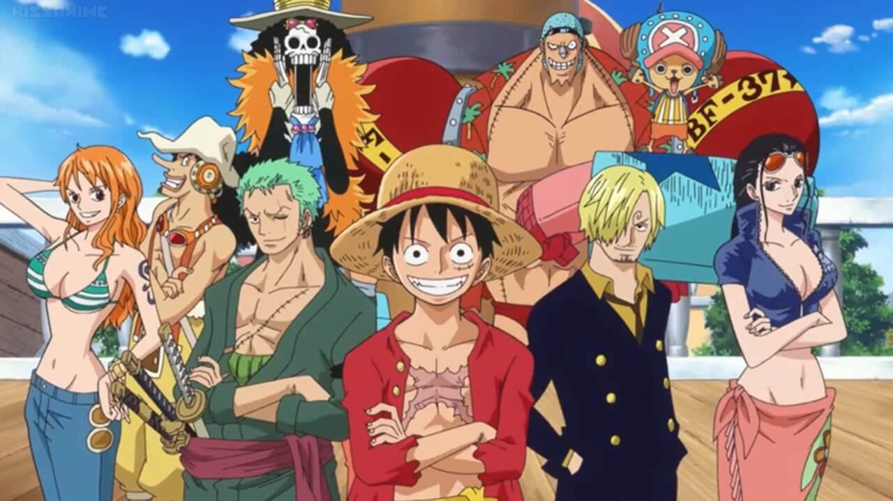

Trong bộ manga/anime One Piece có một số lượng lớn nhân vật rất phong phú được tạo ra bởi Oda Eiichiro. Bối cảnh của manga/anime được đặt trong một thế giới viễn tưởng rộng lớn đang trong "Thời Đại Hải Tặc";
một thế giới của hải tặc, Hải Quân / Chính phủ Thế giới, Quân Cách mạng, một thế giới của những cuộc phiêu lưu khám phá cùng với rất nhiều cuộc chiến và rất nhiều siêu năng lực, siêu sức mạnh kì lạ.
Nội dung chính của câu chuyện xoay quanh nhóm Hải tặc Mũ Rơm trên con đường hành trình khám phá và tìm kiếm ước mơ của họ.

Ảnh minh họa băng Mũ Rơm